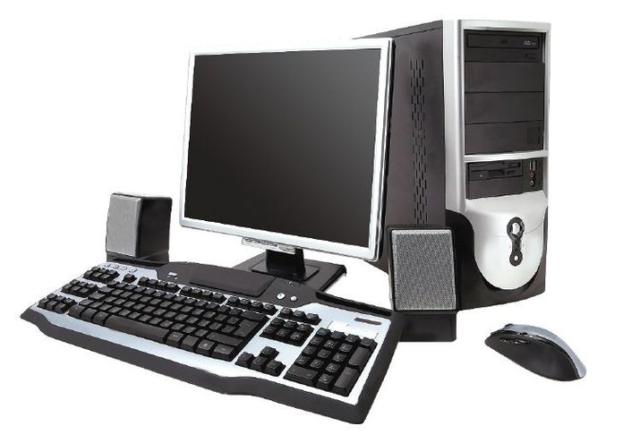

Historia de la computación

Informática: (Según la Real Academia Española de la Lengua) Es el conjunto de conocimientos científicos y técnicos para hacer posible el tratamiento automático de la información por medio de computadoras electrónicas. Computadora u Ordenador: Es una máquina electrónica capaz de aceptar unos datos de entrada, efectuar con ellos una operaciones aritméticas y lógicas, y proporcionar la información resultante a través de un medio de salida.
Calculadora: (acepción actual) Es una máquina capaz de efectuar operaciones aritméticas bajo el control directo del usuario.
Datos: Son conjuntos de símbolos utilizados para expresar o representar un valor numérico, un hecho, un objeto o una idea, codificada en la forma adecuada para ser objeto de tratamiento por medio de una computadora.
Información: Datos tratados y organizados, con significado desde el punto de vista del usuario.
Calculadoras
Calculadoras mecánicas 1
La Calculadora de Sckickard En 1623 Wilhelm Sckickard construye la primera máquina de calcular. La Pascalina 1.642 Blaise Pascal. Conjunto de discos dentados, cada uno de los cuales tiene 10 divisiones, que representaban un dígito. Es capaz de realizar sumas y restas.
Calculadoras mecánicas 2
El Padre de la Computadora
Se considera a Charles Babbage (1791- 1871), como el padre de los sistemas actuales de computación. A Charles Babbage se le atribuye el desarrollo de dos
máquinas de cálculo:
La Máquina Diferencial: (1821) capaz de calcular polinomios de sexto grado y tabular mecánicamente hasta veinte cifras y ocho decimales
Calculadoras mecánicas 3
La Máquina de Tabular
En 1890 Herman Hollerith (1860-1929), inventó su máquina tabuladora que utilizaba corriente eléctrica para detectar los agujeros que estaban perforados y así hizo registrar la información en tarjetas, y el tiempo total del proceso se redujo. Sistema de automatización del censo.
Las primeras computadoras
La computadora
Electromecánica Z-1 (1935) Konrad Zuse en Berlín desarrolló su computadora Z-1 Mark I Computer (ASCC) Automatic Sequence Controller Calculator (1944) Desde 1937 hasta 1944, IBM patrocinó el proyecto del Dr. Howard H. Aiken, profesor de la universidad de Harvard. En 1944 finalizó su objetivo con el nombre de Mark I
Las primeras computadoras 2
La computadora electrónica

ABC (Atanasoff Berry Computer) (1936/37) John Vicent Atanasoff y Clifford Berry. Principios de las primeras computadoras. ENIAC (Electronic Numerical Integrator and Computer) (1946) Construido en la universidad de Pennsylvania, por John W. Mauchly y John Presper Eckert
Generaciones
1ra Generación 1940-52
Tecnología empleada: Válvulas de vacío Uso: Científico y militar Programación: Modificando directamente los valores de los circuitos de la máquina. No existían los lenguajes de programación ni siquiera el ensamblador
2da Generación 1952-64
Tecnología empleada: Transistor Disponía ya de una programación previa, de un sistema operativo, capaz de interpretar instrucciones escritas en lenguajes de programación como COBOL o FORTRAN
3ra Generación 1964-75
Tecnología empleada: Circuito integrado (Lamina de silicio embutida en plástico). Se utilizan materiales semiconductores en lugar de los núcleos de ferrita en la construcción de memorias Se mejoran los lenguajes de programación y empezaron a aparecer programas comerciales, con lo que un usuario no tenia que programar sus aplicaciones
4ta Generación 1975- ¿?
Tecnología empleada: Circuitos de alta escala de integración Microprocesadores. Es el producto de una serie de avances tanto en el hardware, y su tecnología de fabricación, como en el software y sus posibilidades de aplicación
5ta Generación 1990- ¿?
Arquitectura es diferente a la propuesta por Von Neumann Ordenadores inferentes Ordenadores de transputers Ordenador óptico
Sexta Generación 1990- ¿?
Se caracteriza por la evolución de las comunicaciones a la par de la tecnología. La miniaturización de componentes en las máquinas, y su reducción en costo conllevan a sistemas de alta capacidad. Cuentan con arquitecturas combinadas Paralelo / Vectorial, con cientos de microprocesadores vectoriales trabajando al mismo tiempo; se han creado computadoras capaces de realizar más de un millón de millones de operaciones aritméticas de punto flotante por segundo (teraflops). El uso de redes se hace común, con grandes velocidades y la integración de servicios de video de calidad, voz y otros datos multimedia en tiempo
Clasificación de computadoras
Diferencias
Macro computadoras
Son más poderosas, soportan más programas simultáneos Problemas limitados - Fiabilidad Tienen de uno a varias docenas de procesadores Su aplicación: administración publica Cálculos simples con bases de datos
Super computadoras
Pueden ejecutar un solo programa mas rápido Problemas limitados - Velocidad Trabajan con paralelismo masivo Su aplicación: la ciencia y el ejército Cálculos complicados con la memoria